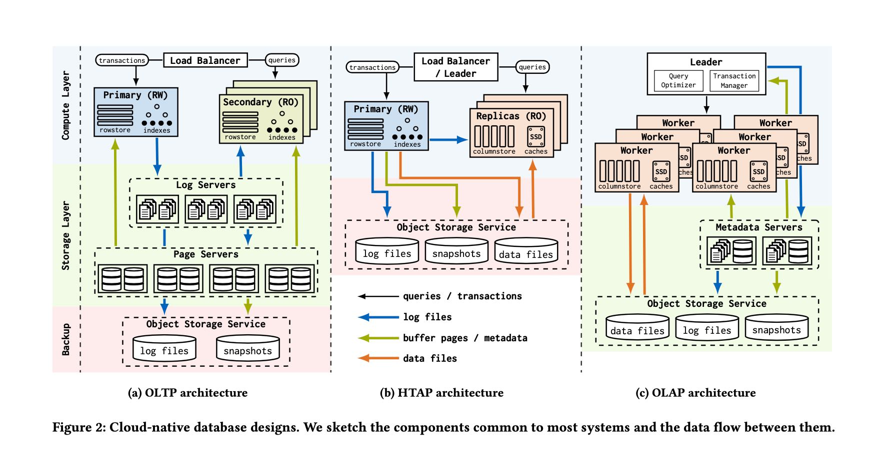
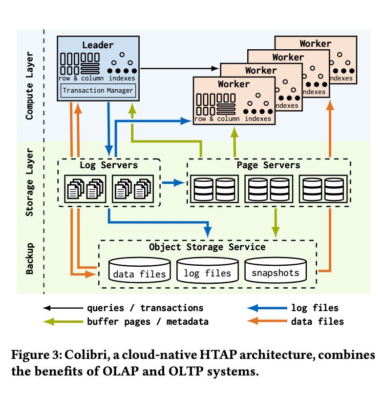
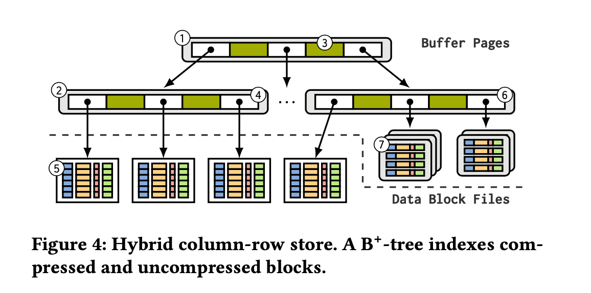
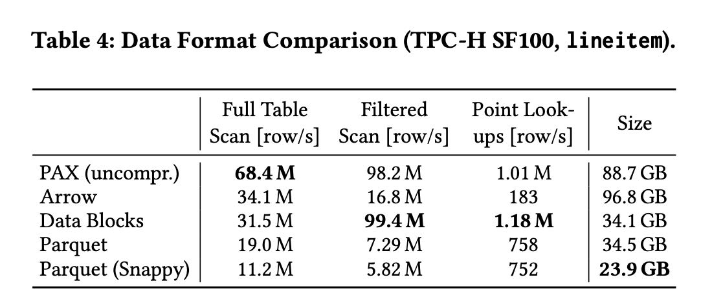

Two Birds With One Stone Designing a Hybrid Cloud Storage Engine for HTAP
文章名字是一石二鸟？TUM在VLDB2024发的论文，将怎么给HTAP构建混合基于云的存储引擎。TUM喜欢在技术细节上打磨，细节上做的比较深入，对于我这样只想看看热闹的人会觉得有点累。不知道那些去copy TUM这些系统的工作者感觉怎么样。
首先文章回顾了过去OLTP, OLAP, HTAP在cloud native上的实现架构。TP上主要就是基于logserver + pageserver, 而AP则主要是基于文件。那么HTAP的思路是基于TP系统优化AP上的性能，将比较冷的数据存储成为列式结构来做分析，这样可以提升AP查询性能。下图中间HTAP是传统的实现，下下图是TUM给出的实现(Colibri) 可以看到基本上就保持了TP结构，然后在row & column storage上来优化AP性能。


在具体设计之前文章给的一组数字可以学习下
- 单个SSD读取带宽可以在10GB/s, 如果组成RAID的话可以到50GB/s. 延迟在100us
- 网络读取带宽可以在100Gbit/s(S3可以到200Gbps). 延迟在80us. 如果用RDMA可以更小。
- S3存储没有上限，而SSD RAID可以得到上百TB(实际AP分析中似乎也不够用).
[!NOTE]
The cloud offers multiple storage options, including instance- local SSDs, remote instances, and object stores. These technologies share similar characteristics: (a) high bandwidth, (b) moderate la- tencies, and (c) (almost) unlimited capacities. A single SSD achieves a read bandwidth of up to 7 GB/s (PCIe 4), and RAID configurations can retrieve more than 50 GB/s. Access latencies on modern SSDs are in the order of 100 μs [30]. Similarly, data centers nowadays pro- vide network bandwidths of 100 Gbit/s or more, and cross-instance network latencies can be less than 80 μs, with further reduction opportunities using RDMA [75]. Cloud object stores, like Amazon S3, also achieve bandwidths of up to 200 Gbit/s. However, request latencies are significantly higher: 100 ms per request are to be ex- pected [21]. Nevertheless, they offer almost unlimited capacities, high durability, and availability. While SSD RAIDs do not offer unlimited storage size, hundred TB configurations are practical.
既然还是基于TP来做改进，那么还是使用B+-Tree结构。RowID来做主键，假设是hot data通常都是最大的row id, cold data都是小的row id. 那么根据这个划分，小的row id上的数据可以consolidate成为compressed column-based data files. 而大row id上的数据一般要被TP读写就应该是uncompressed row-based data pages.

后面各种实现都是基于这些来做优化，因为我也是新手，所以看起来也没啥感觉。HTAP设计上还需要考虑个问题就是bulk load, 类似离线产生data files然后挂在B+-Tree上。
[!NOTE] (4) Bypassing page and log servers for bulk operations. Loading large amounts of data is a common pattern in analytical workloads. OLAP systems like Redshift or Snowflake directly write the data to object stores and only update the metadata referencing the new files. A single write to the metadata suffices to insert thousands of rows. Cloud-native HTAP systems must also adopt this approach to avoid excessive logging for bulk operations.
在说到columnar data formats的时候给了一个对比，我觉得too good to be true. 结合后面”Retrieval Cost Optimization“, 我觉得这个系统data blocks存储结构可能是基于每个column一个file来存储的(好像CK就是用这种存储结构)然后一个file里面可能有多个blocks. 这样一列的多个blocks其实是可以批量读取上来的。

[!NOTE]
We, therefore, combine multiple compressed data block files into a segment to increase the request size. A segment puts together the columns from multiple blocks, such that a single request retrieves one column from all merged blocks. We allocate one segment per leaf page in the B+-tree and store the segment files in the object store. The segment files are created either on the fly during bulk inserts or through maintenance tasks. For the lineitem table, we merge 51 data blocks into one segment, and downloading one column for the entire table takes only 450 requests. This optimization reduces retrieval costs by up to 10x.